The whole official match with the OpenVolley eScoresheet, from the first open to the final scoresheet: a tablet in landscape at the scorer's table, a Swiss league game. The teams and people in the pictures are invented.
1
First open: Swiss or Global
The first time, the app asks “How do you use OpenVolley?”. Choose “Swiss” for Swiss league games: sign-in, the game list, the Einsatzliste, club rosters and the cloud.
“Global” is for any tournament or friendly: no sign-in, games and rosters from Excel. You can change it later in “Options”, as long as no match is on the device.
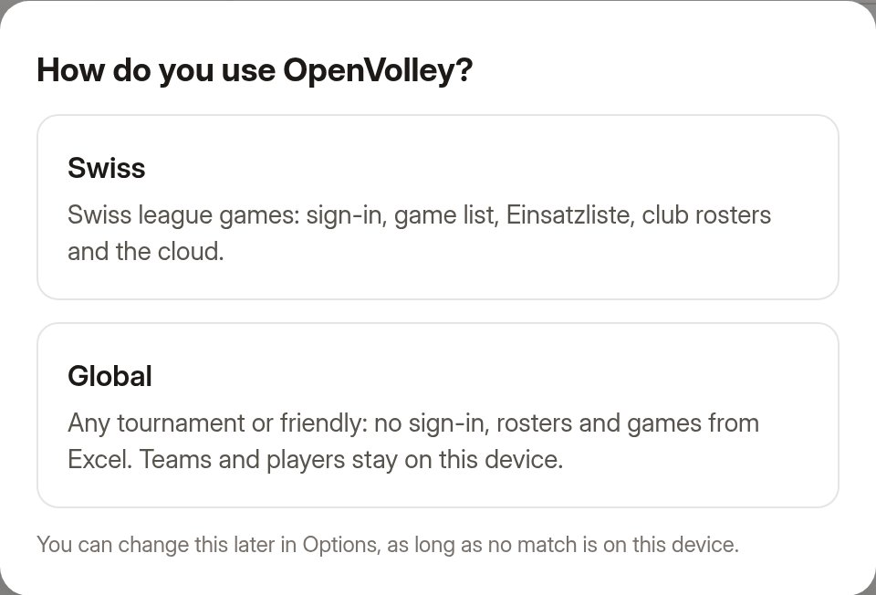
2
Home
Every match starts on Home. Sign in with your OpenVolley account (menu ☰), then tap “Official match”: it lists today's home games of your club.
“Test match” is for practice and never saved on the server, “Easy match” is unofficial (no rosters, no signatures), and “Scoreboard” only shows points and sets. “Continue match” takes you back to the match on this device.
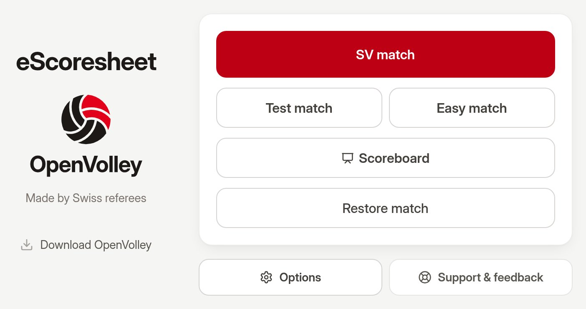
3
Load the game from the schedule
Your game is not in the list? Tap “Enter the game yourself”, then “Load match from schedule”. Choose the gender and the league, then your game.
The app fills in the game number, the teams, the date, the time, the hall and the referees. It needs the internet.
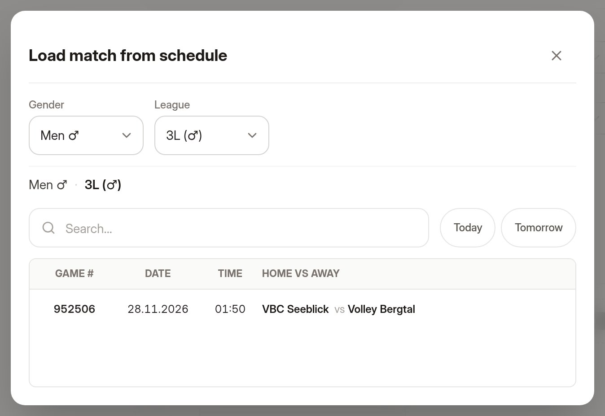
For scorers · eScoresheet 3.2.5
4
Match info and officials
Check the page and add what the schedule does not have, such as the scorer's licence number and the teams' short names, then tap “Create match”. Signed in, the scorer is you. The 1st referee and the scorer are needed; the 2nd referee, the assistant scorer and the line judges are optional. Each referee and each team can get an e-mail address for the final scoresheet.
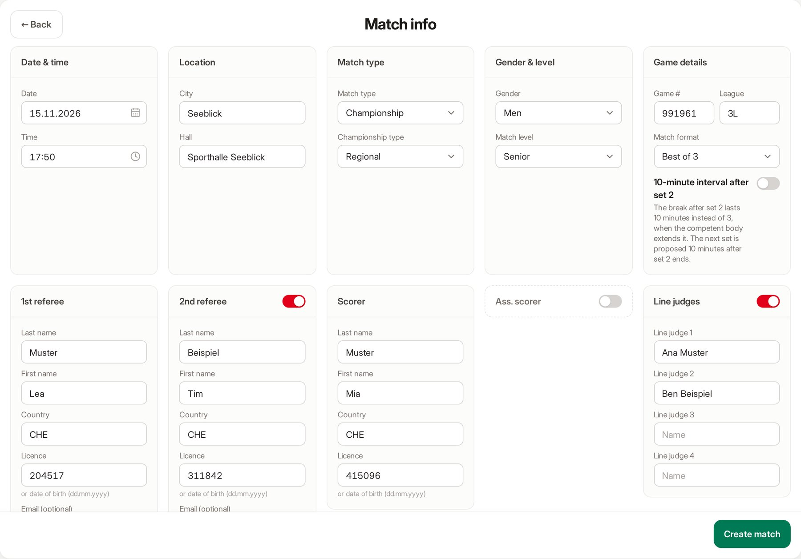
5
Rosters
Tap “Edit roster” for each team. Type the players, or tap “Upload PDF” and choose the team's roster PDF or the Einsatzliste. Mark the captain (C) and up to two liberos, check the shirt and licence numbers, add the bench officials, then tap “Confirm”.
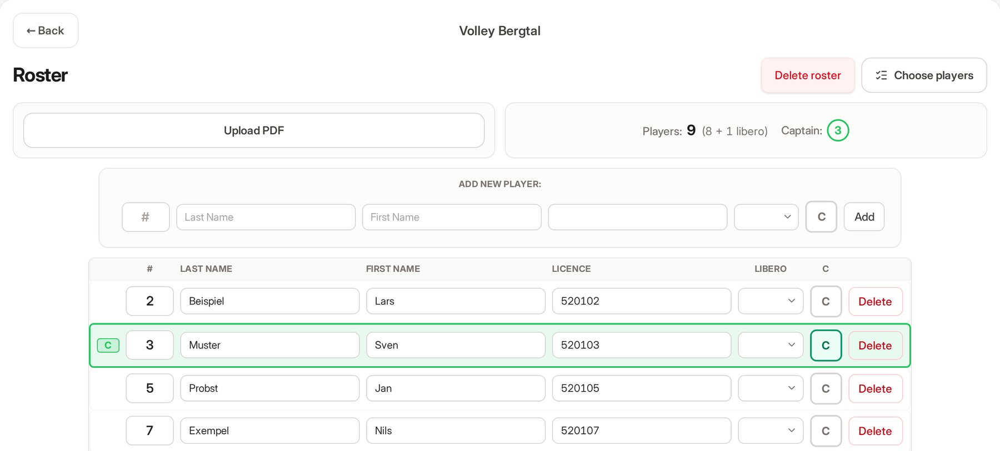
For scorers · eScoresheet 3.2.5
6
A roster sent ahead
A team manager can send the game's roster ahead on manager.openvolley.app. The team's card then shows “Roster sent by …”: “Show” to look at it, “Accept” to load it, “Not now” to leave it for later.
Check it with the coach. If the coach and the captain signed ahead, their signatures come with it.
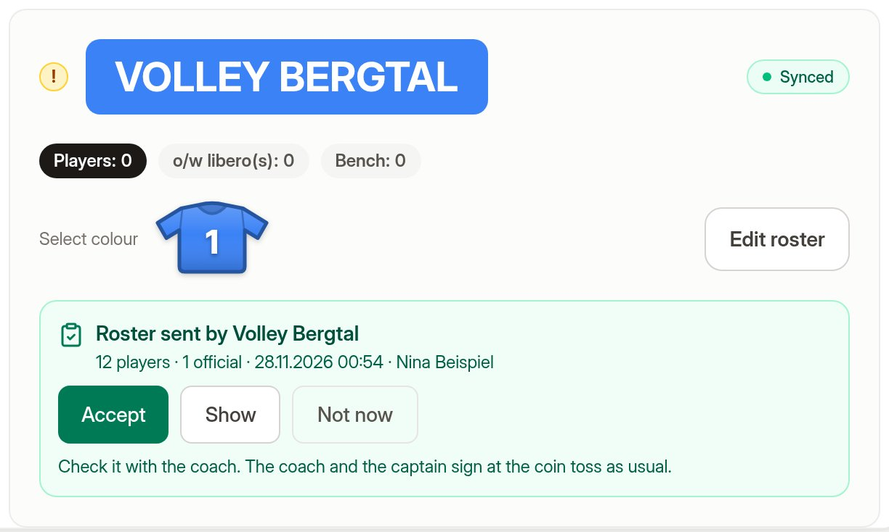
7
Backups and the game PIN
“Backups” at the top of Match setup shows where this match is saved: in the cloud while you score signed in, on this device (in Chrome or Edge with “Select backup folder”) and, with the desktop app, on a USB stick. Keep the game PIN, shown on the match info page and on Home: you need it to delete, restore or continue the match on another device.
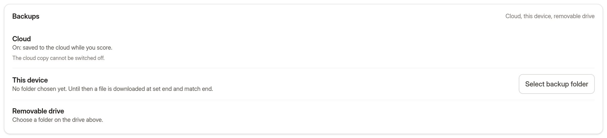
8
Coin toss and signatures
Tap “Coin toss”. Set the sides and the first serve with “Switch sides” and “Switch serve”, then tap “Confirm coin toss result”.
The captain and the coach of each team sign: “Sign A” or “Sign B”, then “Captain” or “Coach”, on the screen or with “Sign on phone”. They can also sign later, during the warm-up.
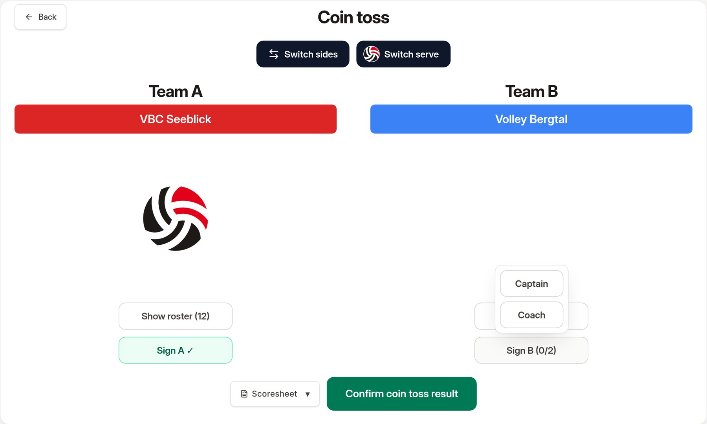
For scorers · eScoresheet 3.2.5
9
Line-ups
Tap “Lineup” on each team's side, enter positions I to VI and tap “Confirm”. The first line-up stays covered (“Line-up set”) until the other team's is in. A flashing “Missing signatures” means a team has not signed yet: tap it and they sign there. Set 1 starts only once all four have signed.
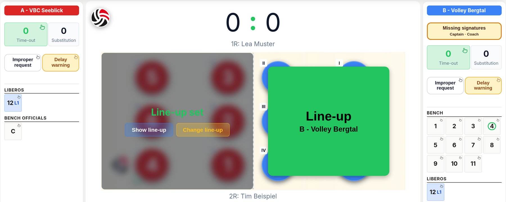
10
Rallies
Tap “Start rally” before each serve, then the point button of the team that won the rally (“Point A” or “Point B”). The “SERVE” box shows the server's number, and the app rotates a team when it wins the service back. During a rally, “Replay rally” replays it.
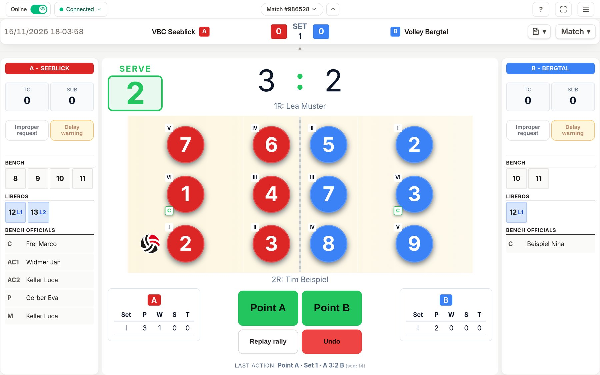
For scorers · eScoresheet 3.2.5
11
Undo and decision change
“Undo” takes back the last point. After a point, “Decision change” gives it to the other team (“Assign to other team”) or replays it (“Replay the rally”); the dialog shows the new score and who serves.
When the referees take back part of the set, use Match › “Go back”. Anything else goes through Match › “Corrections”.
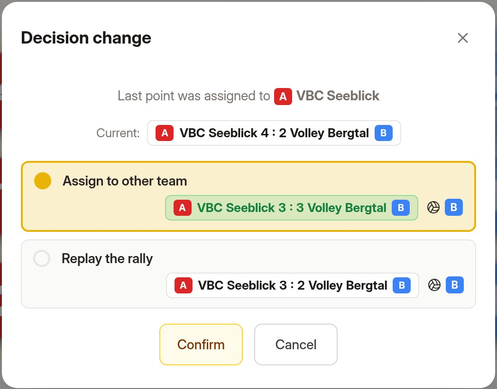
12
Time-outs, substitutions, liberos, sanctions
Time-out: between rallies, tap the team's “TO” box, then “Confirm time-out” (30 seconds).
Substitution: tap the player on court, “Substitution”, then the player who comes in.
Libero: tap a back-row player, then “Libero”.
Sanction: tap the player, then “Sanction”. For the team, “Improper request” and “Delay warning” are under its boxes.
The app checks the rules as you go and asks before recording anything unusual.
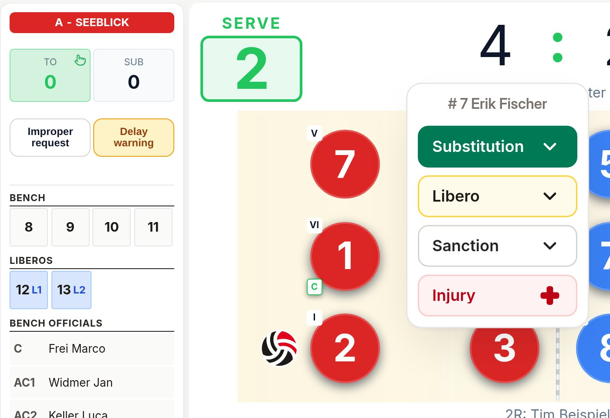
13
Bench requests
With a bench tablet, the coach can ask for a time-out or a substitution, or send the line-up. A card then shows in the top right corner.
“Grant time-out” or “Substitute” opens the usual dialog, “Review and accept” the line-up, and “Decline” asks for a reason that the bench sees. Granting waits while a rally is in play.
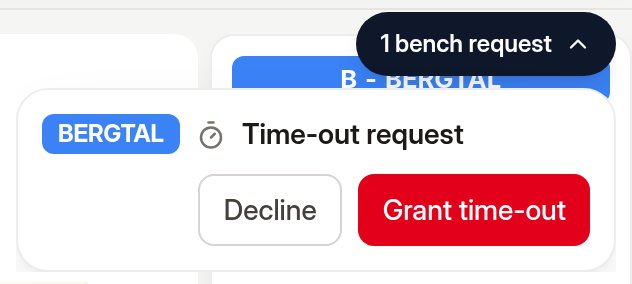
For scorers · eScoresheet 3.2.5
14
Set end
At 25 points with a two-point lead the app ends the set: check the score and the end time, then tap “Confirm”. If the last point was wrong, “Decision change” is still there.
Then the interval between the sets starts, with its countdown.
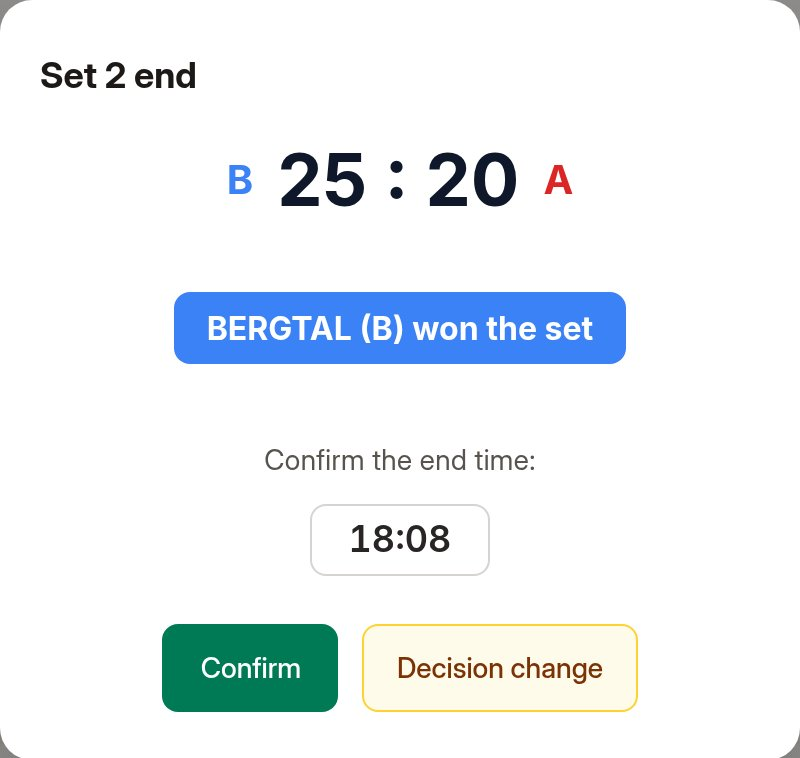
15
Deciding set
Before the deciding set (set 3 in a best of 3, set 5 in a best of 5) the app asks for a new coin toss: “Switch sides” and “Switch serve”, then “Confirm set 3 setup”.
The deciding set goes to 15 points; at 8 points the teams change courts.
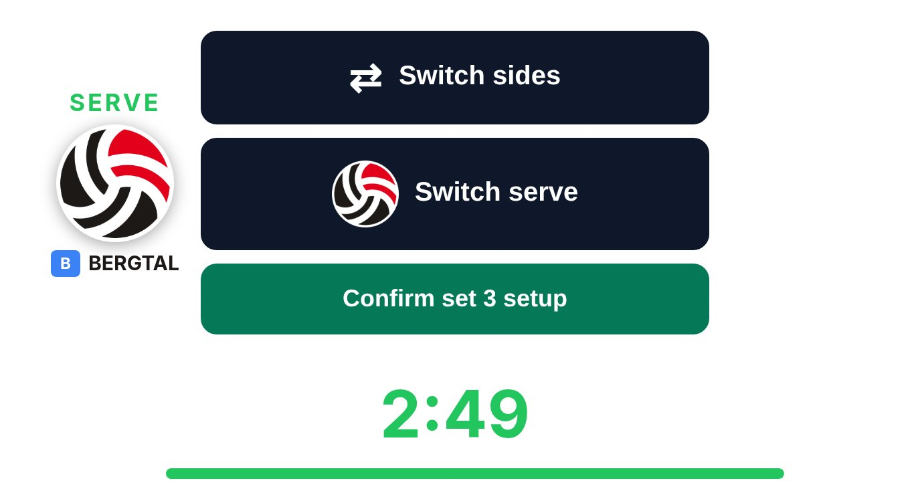
16
Match end
Check the results and collect the signatures: the captains first, then the officials (“Sign on phone” and “Approve with PIN” work too). Then tap “Confirm and approve”: the app downloads a ZIP with the match data and the scoresheet PDF and closes the match on the server. Where the league sends final scoresheets, the PDF is mailed to the scorer, the referees and the team contacts.
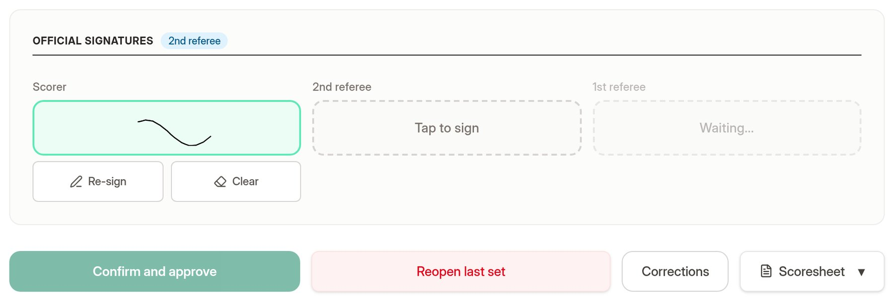
For scorers · eScoresheet 3.2.5
17
Tablets in the hall
In the menu (☰), tap “Connect tablets”. Choose how the tablets connect, turn each tablet on and let it scan its code. The referee and bench tablets need their PIN; the livescore needs none. The chip in the header (for example 1/3) shows how many tablets are connected.
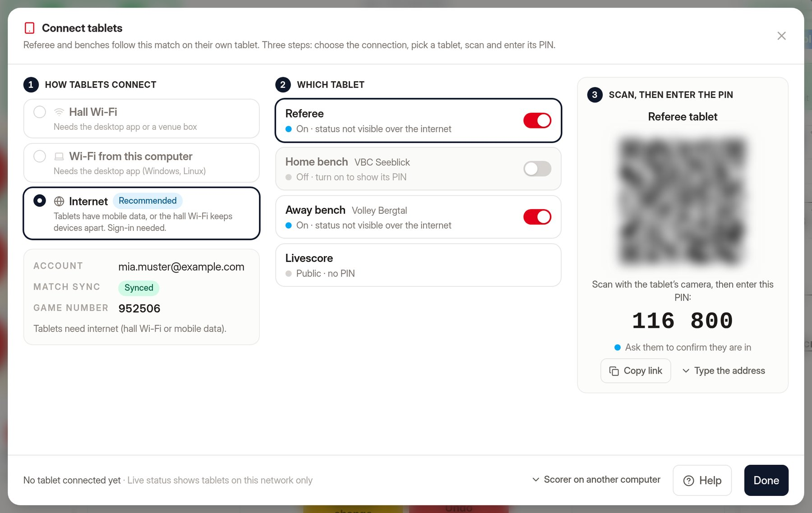
18
Offline, backups and another device
Scoring never needs the internet: every change is saved on this device first and sent when the connection is back. The header shows the state, for example “Connected” or “Offline (3 waiting)”.
To go on with another device: on Home, “Restore match”, enter the game number and the game PIN, “Search cloud backups”, then “Confirm restore”. The old device stops scoring. A backup file works too (“Select backup file”).
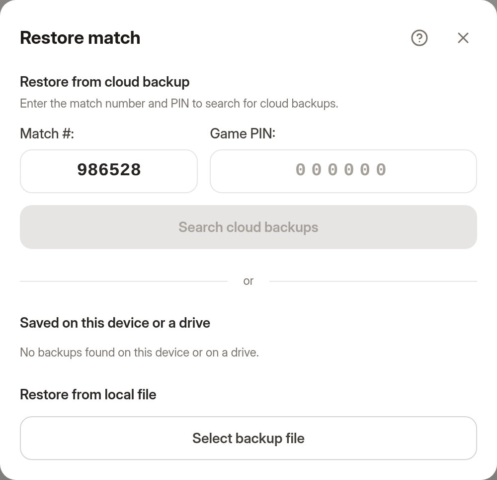
?
More help
Every screen has a ? in its header: the help for that screen, with a short video and “Show me”. The same help, in German, English, French and Italian, is on openvolley.app/support.